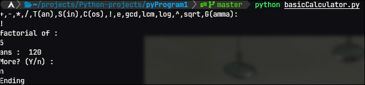
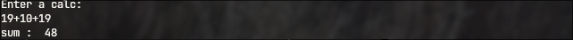

Written in: 
As you can tell from the very descriptive title, this is a "basic" calculator. It really isn't that much basic now. You see, at first, after finishing learning python, I was like, python is a number's programming language. And so the first idea I came up with was to make a word corrector, but that went out the window when I had to use different modules and it got pretty complicated. Then I came up with the great idea of making a calculator from scratch. Initially, it could only perform 4 operations, with only two numbers. Now, it has two files, one file has the four operations with even more operations, but you can't really input as many numbers as you want. The other file, has only 2 operations, adding and subtracting. But this file can take as many inputs as you want. The project explores the use of string splitting the user input, use of many elif statements, and the math modules. This was all, of course, before knowing that there was an eval() for python, and I did not really need to build a calculator from scratch in the first place.
Heres the link to the project: verybasiccalculator
Heres an image of the output of both files:
 